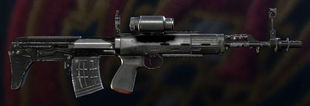
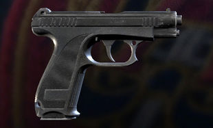
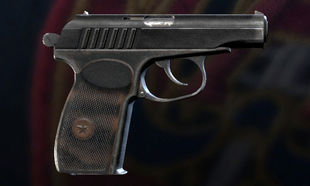

Glaz's Loadout
- Primary is a OTs-03 Marksman Rifle
- 
- Damage:71 MagSize:11 Attatchments Include: Suppressor, Muzzle Brake, and Flash Hider Sights include: Red Dot Sight, Holographic Sight, and Reflex Sight
- One of Glaz's secondaries is the GSh-18 Handgun
- 
- Damage:44 MagSize:19 Attatchments Include: Suppressor and Muzzle Brake
- The other secondairy is the PMM Handgun
- 
- Damage:63 MagSize:9 Attatchments Include: Suppressor, Muzzle Brake, and lazer sight
- Glas has the choice between two Gadgets. Two Smoke Grenades or a Claymore